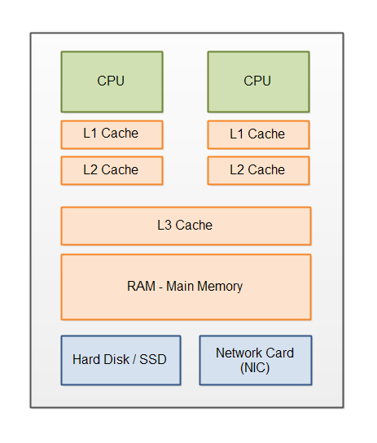
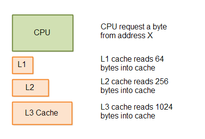

Modern Hardware
Jakob Jenkov |
In order to get maximum performance out of your Java application you need to understand the hardware it is running on. When you write code that conforms with how the hardware works, you get higher performance. Martin Thompson calls this "Mechanical Sympathy".
Of course you don't need to understand every little detail of your hardware. Therefore this tutorial focuses on the parts you should know.
Modern Hardware Architecture
Modern computers tend to have the following components:
- CPU - One or more.
- L1 Cache
- L2 Cache
- L3 Cache
- Main Memory (RAM)
- Disk (HD)
- Network Card (NIC)
L1, L2 and L3 are short for "Level 1", "Level 2" and "Level 3".
The above mentioned hardware components are illustrated here:
Each part will be explained in more detail below.
CPUs
A modern computer may have more than one CPU. In fact this is more the rule than the exception that computers have multiple CPUs.
CPUs have an instruction cache and data cache (L1). The instruction cache is used to read the instructions of your program. When the CPU executes tight loops, it is faster to read the instructions inside the loop from the instruction cache, than read the instructions from main memory. Thus, small, tight loops are faster than larger loops that do not fit in the instruction cache.
L1 and L2 Cache
Each CPU has a L1 and L2 memory cache. The L1 cache is typically small but very fast for the CPU to read from. The L2 cache is typically larger, but also slower to read from than the L1 cache.
When a CPU reads data from the main memory it reads a block of data into its L2 and L1 caches. It is faster to read bigger blocks of memory at a time from main memory than one byte (or 64 bit) at a time. Once the data is inside the L1 and L2 caches the CPU can access them much faster. If the CPU changes any of the data in the CPU caches that data need to be written back to main memory at some point.
L3 Cache
The L3 (Level 3) cache is typically a cache layer that sits on top of the main memory. The L3 cache is thus shared by all CPUs on the motherboard. Whenever data is needed by a CPU from main memory, a bigger block of data is read into the L3 cache. In case a CPU needs more data stored consecutively after the memory it requested previously, chances are that memory can be found in the L3 cache.
Hard Disks
Hard disks are used to store data which is to survive a server reboot. Hard disks are much, much slower than memory (although this is about to change). But the storage capacity of hard disks are also much much bigger than memory.
Hard disks fall into two categories: The spinning hard disk and the SSD (Solid State Drive). The spinning hard disk is typically cheaper and bigger than SSD's, but typically also slower.
3D XPoint Memory
In 2015 Intel announced a new type of memory called "3D XPoint Memory" (pronounced "cross point"). This memory is almost as fast as DRAM is today, but it's durable, meaning data stored to it survives a server reboot just like data written to a hard disk.
3D XPoint Memory should also be reasonably cheap, so you can get big memory blocks - the size of a hard disk - at an affordable price. 3D XPoint memory will, hopefully, revolutionize the speed of software that needs to read and write big amounts of data.
Network Interface Cards (NIC)
The network interface card (NIC) is used to send and receive data over the network. The speed of the network card in your computer(s) impact how fast you can communicate with other computers.
The speed may impact the need for caching etc. of data locally, either in memory or on disk. The faster NIC you have (and the other end of the connection has), the less need for caching. Of course, if the data needs to pass through several other computers on the way, like data sent over the internet, then the speed of all these intermediate computers + NICs also matters.
Often when you read data from a network card, the data is first read from the network into the OS memory, and from OS memory into the memory of your application. However, some types of network card technologies can copy data directly from the network card into the memory of your application, bypassing the OS memory copy step. Some of these technologies are "Infiniband" and "RDMA Over Converged Ethernet".
Sequential Data Access is Faster
Because of all the caching layers, and how ordinary hard disks work, sequential data access is faster than arbitrary data access. The reason is, that all caching strategies are based on the assumption that your program will access data sequentially. Let me explain a bit more how.
When a CPU requests a piece of data from main memory, the hardware assumes that the CPU will probably soon request the next byte (or 64 bit block) after that etc. Since many memory and disk technologies are fast at reading larger blocks of memory at a time, it makes sense for the hardware to just copy such bigger blocks of memory at a time. If the CPU actually processes the memory sequentially, accessing the next address in the data block is faster because it is already present in the cache.
Here is a diagram illustrating the caching principle in L1, L2 and L3:
This kind of big-block-loading behaviour is true for all cache layers, all the way down to the hard disk. Even the hard disk can read bigger blocks of data from the disk faster than reading the data one byte at a time.
This caching behaviour means that accessing data sequentially is much faster than accessing data at arbitrary
addresses. That means, that data structures like the Java ArrayList is faster than the
LinkedList .
When you access data at arbitrary addresses in memory (or on disk) it is much slower because the data requested is seldomly located in a cache. That means that the data has to be loaded in from disk, main memory, another cache layer etc. which is slower than accessing directly in the closest cache (L1 preferably).
| Tweet | |
Jakob Jenkov | |